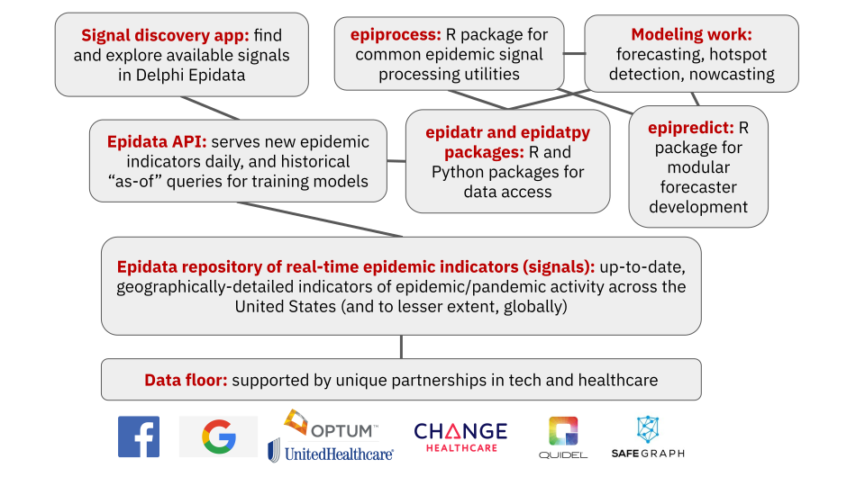
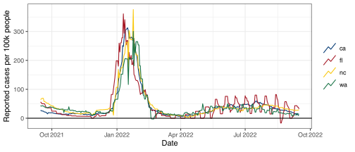
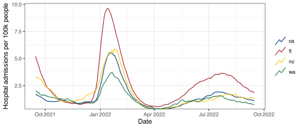
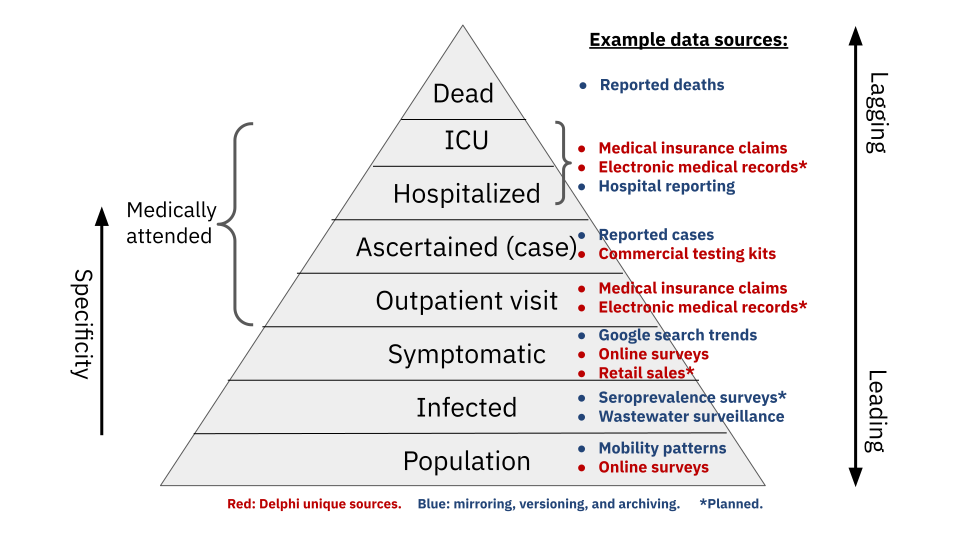
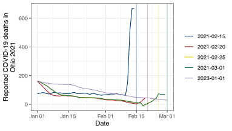

install.packages("remotes")
install.packages("tidyverse")
install.packages("tidymodels")
install.packages("glmnet")
remotes::install_github("cmu-delphi/epidatr")
remotes::install_github("cmu-delphi/epidatasets")
remotes::install_github("cmu-delphi/epiprocess@dev")
remotes::install_github("cmu-delphi/epipredict@dev")
remotes::install_github("dajmcdon/rtestim")CANSSI Prairies — Epi Forecasting Workshop 2025
Introduction to Panel Data in Epidemiology
Lecture 1
Daniel J. McDonald
Outline
About
Workshop Overview and System Setup
Panel Data
Versioned Data
Epidata Repository and API
{epidatr}and Other DataVersioning in
{epidatr}
1 About
Daniel J. McDonald
- PhD in Statistics from Carnegie Mellon University
- Risk Bounds for Time series, esp. macroeconomic forecasting
- Subsequent research and teaching on machine learning (model selection, optimization, regularization, nonparametrics)
- Began working on epidemiology in mid-2020 with Delphi Research Group
- Focus is largely on forecasting and nowcasting epidemic aggregates
- Funding from US CDC (ongoing?), CSTE, NSERC, CANSSI
About Delphi
Founded in 2012 at Carnegie Mellon University, now expanded to UC Berkeley, and University of British Columbia.
Currently 5 faculty, ~10 PhD students, ~15 staff (mostly software engineers).
Easy to join us from anywhere (lots of volunteers during Covid-19 pandemic).
We are:
- CDC Center of Excellence for Influenza and Covid-19 Forecasting (2019-24).
- CDC Innovation Center for Outbreak Analytics and Disease Modeling (2024-29).
Our mission: To develop the theory and practice of epidemic detection, tracking and forecasting, and their use in decision making, both public and private.
What does Delphi do?
Procure real-time, aggregated data streams informative of infectious diseases and syndromes, in collaboration with partners in industry and government.
Extract signals and make them widely available via the Epidata platform & API.
Develop and deploy algorithms for epidemic detection, tracking, forecasting.
Develop and maintain statistical software packages for these tasks.
Make it all production-grade, maximally-accessible, and open-source (to serve CDC, state and local public health agencies, epi-forecasting researchers, data journalists, the public)
What we provide
Acknowledgements
Most of this material was developed for the InsightNet Tooling Workshop in December 2024.
- Thanks to major contributors
- Ryan J. Tibshirani
- Rachel Lobay
- Alice Clima
- Logan Brooks
- Delphi Tooling and Forecasting Team
- Elvis Cai, Olivia Liu, Paul Gustafson
- Funding
- Center for Forecasting and Outbreak Analytics
- Council of State and Territorial Epidemiologists
- NSERC
- CANSSI


2 Workshop Overview and System Setup
What we will cover
- Characteristics of panel data in epidemiology
- Tools for processing and plotting panel data
- Statistical background on nowcasting and forecasting
- Tools for building nowcasting and forecasting models
- Plenty of examples throughout of real case studies
Goals part I
Present a statistical way of thinking about now/forecasting
- Basic mindsets
-
- data versioning and structure
-
- the importance of empirical validation using techniques like time series cross-validation are ubiquitous
- Certain basic modeling considerations
-
- starting simple and building up complexity
-
- taming variance through regularization,
-
- addressing nonstationarity with trailing training windows
Goals part II
- Present software whichs aid processing, tracking, nowcasting, and forecasting with panel data
- These tools are still in development and we welcome your feedback
- We have tried hard to get the framework right; but many individual pieces themselves could still be improved
- If these aren’t working for you, then we want to hear from you!
- We welcome collaboration, and everything we do is open source
A disclaimer
- My background is primarily in statistics and computer science
- This obviously influences my way of thinking and my approach to nowcasting and forecasting
- I don’t have nearly as much experience with traditional epi models, but I do have opinions about the pros/cons.
- Ask me at any point if you have a question about why I’m doing things a certain way
- This workshop is supposed to be useful for YOU. Ask questions if you have them, don’t be shy
- We may not (likely won’t?) cover everything. Hopefully the materials will be a resource for you beyond this workshop
System setup
- Let’s take a few moments here.
- You may also navigate to the GitHub repo and Clone/Fork the entire thing.
3 Panel Data
Panel data
Panel data is cross-sectional measurements of subjects over time.
With aggregated data, the subjects are geographic units (e.g. provinces, states).
Time index + one or more locations/keys.
# A tibble: 549 × 3
time_value geo_value percent_cli
<date> <chr> <dbl>
1 2020-06-01 ca 2.75
2 2020-06-02 ca 2.57
3 2020-06-03 ca 2.48
4 2020-06-04 ca 2.41
5 2020-06-05 ca 2.57
6 2020-06-06 ca 2.63
7 2020-06-07 ca 2.73
8 2020-06-08 ca 3.04
9 2020-06-09 ca 2.97
10 2020-06-10 ca 2.99
# ℹ 539 more rowsThe % of outpatient doctor visits that are COVID-related in CA, between June 2020 to Dec. 2021
Examples of panel data
JHU CSSE COVID-19 cases per 100k
Examples of panel data
Confirmed COVID-19 Hospital Admissions per 100k, 7day average
The \(x\)-axis is
Date of report
Not “date of event”
More disclaimers…
Most of this workshop will focus on panel data
Typical for the tasks my group has focused on
Typically analyze aggregate signals
Simultaneously across geographies
Contrasts with “single geo models”
Not working with “line list data”
4 Versioned Data
Intro to versioned data
→ Person comes to ER
→ Admitted
→ Has some tests
→ Tests come back
→ Entered into the system
→ …
- Epidemic aggregates are subject to reporting delays and revisions
- A “Hospital admission” may not attributable to a particular condition until a few days have passed
- Additionally, various mistakes lead to revisions
- Track both: when the event occurred and when it was reported
Intro to versioned data
- Epidemic aggregates are subject to reporting delays and revisions
- A “Hospital admission” may not attributable to a particular condition until a few days have passed
- Additionally, various mistakes lead to revisions
- Track both: when the event occurred and when it was reported
Versioned data
The event time is indicated by
time_value(orreference_date)Second time index indicates the data
version(orreporting_date)
version = the time at which we saw a value associated to a time_value
# A tibble: 6 × 4
time_value geo_value percent_cli version
<date> <chr> <dbl> <date>
1 2020-06-01 ca 2.14 2020-06-06
2 2020-06-01 ca 2.14 2020-06-08
3 2020-06-01 ca 2.11 2020-06-09
4 2020-06-01 ca 2.13 2020-06-10
5 2020-06-01 ca 2.20 2020-06-11
6 2020-06-01 ca 2.23 2020-06-12Versioned panel data
Estimated percentage of outpatient visits due to CLI across multiple versions.
Latency and revision in signals
- Latency the delay between data collection and availability
Example
A signal based on insurance claims may take several days to appear as claims are processed
- Revision data is updated or corrected after initial publication
Example
COVID-19 case reports are revised as reporting backlogs are cleared
Latency and revision in signals - Example
- Recall the first example of panel & versioned data we’ve seen…
- In June 2020, this signal is typically 4 days latent
# A tibble: 5 × 5
time_value geo_value percent_cli version latency
<date> <chr> <dbl> <date> <drtn>
1 2020-06-01 ca 2.14 2020-06-06 5 days
2 2020-06-02 ca 1.96 2020-06-06 4 days
3 2020-06-03 ca 1.77 2020-06-06 3 days
4 2020-06-04 ca 1.65 2020-06-08 4 days
5 2020-06-05 ca 1.60 2020-06-09 4 days and subject to revision
# A tibble: 5 × 5
time_value geo_value percent_cli version latency
<date> <chr> <dbl> <date> <drtn>
1 2020-06-01 ca 2.14 2020-06-06 5 days
2 2020-06-01 ca 2.14 2020-06-08 7 days
3 2020-06-01 ca 2.11 2020-06-09 8 days
4 2020-06-01 ca 2.13 2020-06-10 9 days
5 2020-06-01 ca 2.20 2020-06-11 10 daysRevision triangle, Insurance Claims WA January 2022
- 7-day trailing average to smooth day-of-week effects
Revisions
Many data sources are subject to revisions:
Case and death counts are corrected or adjusted by authorities
Medical claims can take weeks to be submitted and processed
Surveys are not completed promptly
An accurate revision log is crucial for researchers building nowcasts and forecasts
Obvious but crucial
A forecast that is made today can only use data available “as of” today
Three types of revisions
- Sources that don’t revise (provisional and final are the same)
Facebook Survey and Google symptoms
- Predictable revisions
Claims data and public health reports aligned by test, hospitalization, or death date
Almost always revised upward as additional claims enter the pipeline
- Revisions that are large and erratic to predict
COVID cases and deaths
These are aligned by report date
Types of revisions - Comparison between 2. and 3.
Revision behavior for two indicators in the HRR containing Charlotte, NC.
DV-CLI signal (left): regularly revised, but effects fade
JHU CSSE cases (right) remain “as first reported” until a major correction is made on Oct. 19
Reporting backlogs - Example
Bexar County, Texas, summer of 2020…
- Large backlog of case reports results in a spike
- Auxilliary signals show continued decline
- Reports are not be trustworthy without context
5 Epidata Repository and API
What is the Epidata repository
Epidata: repository of aggregated epi-surveillance time series
Signals can be either public or restricted.
Currently contains over 5 billion records
During pandemic, handled millions of API queries per day
Many signals aren’t available elsewhere
Make epi-surveillance more nimble, complete, standardized, robust, and real-time
Features of Delphi Epidata
Built-in support for:
- Data revisions (“backfill”), including reporting dates and changes
- Geo levels w/ auto-aggregation (e.g. county, state, and nation) and specialized levels (e.g., DMA, sewer sheds)
- Demographic breakdown
- Representation for missingness and censoring
- Population sizes and fine-grained population density
Customized smoothing and normalization
Access control
Code is Open Source.
Signals are as accessible (w/ API, SDK) as allowed by DUAs
Severity pyramid
6 {epidatr}
Installing {epidatr}
(you already did this, but just for posterity…)
Install the CRAN version
or the development version
The CRAN listing is here.
Python
In Python, install delphi-epidata from PyPI with
delphi-epidata is soon to be replaced with epidatpy.
Using {epidatr} and {epidatpy}
# A tibble: 3 × 15
geo_value signal source geo_type time_type time_value direction issue
<chr> <chr> <chr> <fct> <fct> <date> <dbl> <date>
1 nc confirmed… hhs state day 2024-04-01 NA 2024-04-22
2 nc confirmed… hhs state day 2024-04-05 NA 2024-04-22
3 nc confirmed… hhs state day 2024-04-06 NA 2024-04-22
# ℹ 7 more variables: lag <dbl>, missing_value <dbl>, missing_stderr <dbl>,
# missing_sample_size <dbl>, value <dbl>, stderr <dbl>, sample_size <dbl>Python equivalent:
API keys
Anyone may access the Epidata API anonymously without providing any personal data!!
Anonymous API access is subject to some restrictions: public datasets only; 60 requests per hour; only two parameters may have multiple selections
API key grants privileged access; can be obtained by registering with us
Privileges of registration: no rate limit; no limit on multiple selections
We just want to know which signals people care about to ensure we’re providing benefit
Tip
- The
{epidatr}client automatically searches for the key in theDELPHI_EPIDATA_KEYenvironment variable. - We recommend storing it in your
.Renvironfile, which R reads by default. - More on setting your API key here.
Interactive tooling in R
# A tibble: 28 × 2
Endpoint Description
<chr> <chr>
1 pub_covid_hosp_facility() COVID hospitalizations by facility
2 pub_covid_hosp_facility_lookup() Helper for finding COVID hospitalization f…
3 pub_covid_hosp_state_timeseries() COVID hospitalizations by state
4 pub_covidcast() Various COVID and flu signals via the COVI…
5 pub_covidcast_meta() Metadata for the COVIDcast endpoint
6 pub_delphi() Delphi's ILINet outpatient doctor visits f…
7 pub_dengue_nowcast() Delphi's PAHO dengue nowcasts (North and S…
8 pub_ecdc_ili() ECDC ILI incidence (Europe)
9 pub_flusurv() CDC FluSurv flu hospitalizations
10 pub_fluview() CDC FluView ILINet outpatient doctor visits
11 pub_fluview_clinical() CDC FluView flu tests from clinical labs
12 pub_fluview_meta() Metadata for the FluView endpoint
13 pub_gft() Google Flu Trends flu search volume
14 pub_kcdc_ili() KCDC ILI incidence (Korea)
15 pub_meta() Metadata for the Delphi Epidata API
16 pub_nidss_dengue() NIDSS dengue cases (Taiwan)
17 pub_nidss_flu() NIDSS flu doctor visits (Taiwan)
18 pub_nowcast() Delphi's ILI Nearby nowcasts
19 pub_paho_dengue() PAHO dengue data (North and South America)
20 pub_wiki() Wikipedia webpage counts by article
21 pvt_cdc() CDC total and by topic webpage visits
22 pvt_dengue_sensors() PAHO dengue digital surveillance sensors (…
23 pvt_ght() Google Health Trends health topics search …
24 pvt_meta_norostat() Metadata for the NoroSTAT endpoint
25 pvt_norostat() CDC NoroSTAT norovirus outbreaks
26 pvt_quidel() Quidel COVID-19 and influenza testing data
27 pvt_sensors() Influenza and dengue digital surveillance …
28 pvt_twitter() HealthTweets total and influenza-related t…Fetching data - COVIDcast main endpoint
jhu_us_cases <- pub_covidcast(
source = "jhu-csse", # this endpoint contains many different sources
signals = "confirmed_7dav_incidence_prop", # other signals: deaths, cumulative, etc.
geo_type = "nation", # the geographic resolution (nation, state, hrr, msa, etc.)
time_type = "day", # or week or year
geo_values = "us", # optional
time_values = epirange(20210101, 20210401), # optional
... # additional arguments
)# A tibble: 3 × 8
geo_value signal source geo_type time_value issue lag value
<chr> <chr> <chr> <fct> <date> <date> <dbl> <dbl>
1 us confirmed_7dav_in… jhu-c… nation 2021-01-01 2023-03-10 798 61.9
2 us confirmed_7dav_in… jhu-c… nation 2021-01-02 2023-03-10 797 64.2
3 us confirmed_7dav_in… jhu-c… nation 2021-01-03 2023-03-10 796 67.1value is the requested signal
There are some other columns in the usual output that I’ve hidden
Get everything for a source + signal
jhu_us_cases <- pub_covidcast(
source = "jhu-csse", # this endpoint contains many different sources
signals = "confirmed_incidence_num", # raw cases during the entire pandemic reporting until ~ April 2024
geo_type = "county", # the geographic resolution (nation, state, hrr, msa, etc.)
time_type = "day", # lowest resolution
geo_values = "*", # (default)
time_values = "*", # (default)
... # additional arguments
)This query takes a few minutes to run, so I don’t recommend it.
But there is support for automatic caching,
and using
"*"speeds things up relative to specifying many specific ranges.
The result has about 3.75M rows and occupies 400Mb.
7 Versioning in {epidatr}
Versioned data in {epidatr}
Two important, mutually exclusive parameters
issues = c(mdy1, mdy2, ..., )
- fetches the data that the source made available on the requested dates
- Database stores only the diffs, so that’s typically what you get
- Even if the source republishes the entire history every time they make an update
as_of = mdy
- fetches the all available data as it would have looked on
mdy - Think of it as winding back the clock to the date
mdy - API only accepts a single date here
Example issues query
- I wanted to display a major reporting error.
versions <- as.Date(c("2021-02-15", "2021-02-20", "2021-02-25", "2021-03-01", "2023-01-01"))
pub_covidcast(
"jhu-csse", "deaths_7dav_incidence_num",
geo_type = "state",
geo_values = "oh",
time_type = "day",
time_values = epirange(20210101,20210301),
issues = versions
) |>
select(geo_value, time_value, version = issue, deaths = value)# A tibble: 4 × 4
geo_value time_value version deaths
<chr> <date> <date> <dbl>
1 oh 2021-02-14 2021-02-15 670.
2 oh 2021-02-19 2021-02-20 43.1
3 oh 2021-02-24 2021-02-25 42.3
4 oh 2021-02-28 2021-03-01 68.7Not what I wanted.
Got only the diff on each issue.
I wanted to view the whole history on each of those dates.
Correct as_of query
res <- map(versions, # same set as before
.f = \(v) {
pub_covidcast(
"jhu-csse", "deaths_7dav_incidence_num",
geo_type = "state",
geo_values = "oh",
time_type = "day",
time_values = epirange(20210101,20210301),
as_of = v
) |>
select(geo_value, time_value, deaths = value) |>
mutate(version = v)
}) |>
list_rbind()
res |> head(7)# A tibble: 7 × 4
geo_value time_value deaths version
<chr> <date> <dbl> <date>
1 oh 2021-01-01 72.3 2021-02-15
2 oh 2021-01-02 77.3 2021-02-15
3 oh 2021-01-03 81 2021-02-15
4 oh 2021-01-04 81.7 2021-02-15
5 oh 2021-01-05 75 2021-02-15
6 oh 2021-01-06 73.3 2021-02-15
7 oh 2021-01-07 71.4 2021-02-15- Got the data as it would have appeared for each of the 4 dates.
- But
as_ofcan only accept a scalar, not vector of dates. - Had to “loop” over them.
- We’ll see a more efficient way to do this later this morning.
Now I can show you why I wanted that query
Versioning in nowcasting and forecasting
Revision patterns can be used to inform understanding of current situation
Often, predicting “today” is more about predicting the revisions than the process
Forecasting often requires adjustments for revision/reporting patterns
Backtesting requires using data that would have been available at the time, not current data
Only looking at the most recent data is a huge blunder
Wrapup and worksheet discussion
Versioned Data and Latency
as_of: One version; the specific date when the data was last updatedissues: Multiple versions; with differentas_ofdates
Epidata API: delivers up-to-date, granular epidemiological data + historical versions.
{epidatr}: Client package for RVersioning and panel structure are key first steps for analysis
Understanding Data — dajmcdon/epidata-workshop-2025